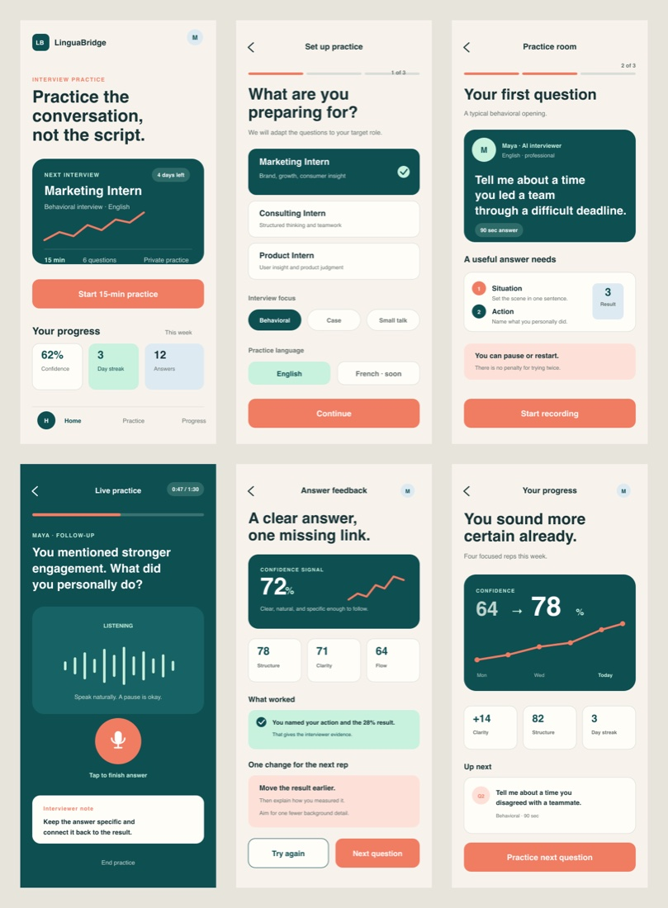

Ximalaya · Internship
AI product operations
I evaluated the experience of an AI reading pen before launch, compared competing products and designed A/B tests to improve how content was presented.
ESSEC Business School · Tongji University
I’m a business student in the Tongji–ESSEC dual-degree program. I’m interested in how people use digital products and how research can help teams make better decisions.
Explore my work Explore PinterestXimalaya · Internship
I evaluated the experience of an AI reading pen before launch, compared competing products and designed A/B tests to improve how content was presented.
Tongji University · SITP
I led a study of what makes shoppers adopt AI-powered search. Our team collected 650 valid responses and used Python and SPSS to analyse adoption factors.
Tongji University · Student Union
I led the International Department and coordinated a ten-person team on campus exchange initiatives, including the China–Europe University Presidents’ Dialogue.
A complementary study on user experience and marketing strategies, based on 492 valid survey responses.

Mobile interface mockups for choosing a practice scenario, recording an answer and reviewing feedback. Select the image to see the desktop screens.